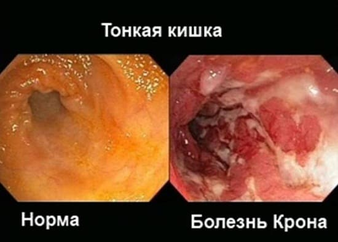
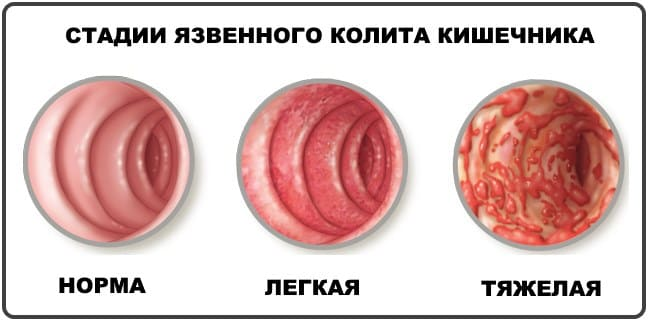
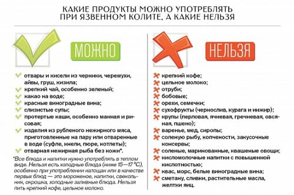

Воспалительное заболевание кишечника — заболевание, которое развивается из-за воспаления внутри пищеварительной системы человека. От воспалительных заболеваний кишечника страдают примерно 1 миллион американцев, и им подвержены люди всех возрастных групп. Хотя заболевания могут появиться в раннем детстве, чаще всего они начинаются в возрасте от 15 до 30 лет. Существуют два типа воспалительных заболеваний кишечника: болезнь Крона (гранулематозная болезнь) и язвенный колит.
БОЛЕЗНЬ КРОНА
И болезнь Крона, и язвенный колит — воспалительные заболевания кишечника, которые очень похожи. Какое из этих двух заболеваний будет выявлено — зависит от локализации поражения. При болезни Крона чаще всего страдает тонкий кишечник, но она может поразить любую часть пищеварительной системы: рот, пищевод, желудок, толстую кишку или анальное отверстие.
Болезнь Крона может быть обнаружена у людей всех возрастных групп, начиная с детей младшего возраста и заканчивая пожилыми людьми. Тем не менее заболевание чаще всего начинается в подростковом возрасте или в 20—30 лет. Создается впечатление, что болезнь Крона может передаваться по наследству.
ПРИЧИНЫ
Болезнь Крона представляет собой дисбаланс иммунной системы организма (аутоиммунная реакция). Пищеварительная система может быть поражена вирусом или бактериями, провоцируя иммунную систему атаковать захватчика, что ведет к развитию воспалительной реакции в стенке пищеварительной трубки. Считается, что иммунная система продолжает поддерживать эту реакцию даже после того, как вирус или бактерия устранены, что ведет к постоянному воспалению.
У людей, страдающих болезнью Крона, встречаются и другие нарушения иммунной системы, такие какие пищевые аллергии и аллергии на окружающую среду, таким образом, аллергические реакции тоже могут принимать участие в развитии этого заболевания.
СИМПТОМЫ
Возможными симптомами, которые могут сильно различаться у разных людей, являются:
• диарея;
• частые боли в нижней части живота;
• кровянистый стул;
• кровотечение из анального отверстия;
• потеря веса;
• частая лихорадка;
• утомляемость;
• отсутствие аппетита;
• признаки дефицита различных питательных веществ.

ДИАГНОСТИКА
Заподозрив, что симптомы вашего ребенка могут быть вызваны болезнью Крона, ваш педиатр может взять анализы крови и кала. Некоторые анализы крови могут показать наличие воспалительного процесса, протекающего в организме, а анализы кала помогут исключить инфекции, вызванные паразитами или бактериями. Если есть подозрения на болезнь Крона или язвенный колит, педиатр, скорее всего, направит вас к детскому гастроэнтерологу для дальнейшего обследования. Специалист может назначить две процедуры, известны как эндоскопия и колоноскопия, направить на рентгеновское исследование брюшной полости — рентгенография верхних отделов желудочное кишечного тракта.
Эндоскопия проводится с помощью маленькой трубки с камерой в 1 конце. Ее вводят через рот в пищевод желудок. Это позволяет врачу рассмотреть эти области на предмет наличия признаков воспаления. Он та же может взять образцы ткани для биопсии, которая покажет наличие болезни Крона, если она поразила вашего ребенка.
Колоноскопия, по существу, это эндоскопия, проводимая с другого конца: с помощью введения маленькой, тонкой трубки с камерой конце через анальное отверстие в толстую кишку. Это позволяет непосредственно осмотреть толстую кишку и дает возможность взять образец ткани для биопсии.
ЛЕЧЕНИЕ
Хотя в настоящее время болезнь Крона не может быть полностью вылечена, ее можно контролировать столько, чтобы ваш ребенок мог вести нормальный образ жизни.
При всех проблемах с желудочно- кишечным трактом, особенно при болезни Крона, может помочь алгоритм лечения «таблетка-навык».
АЛГОРИТМ ЛЕЧЕНИЯ «ТАБЛЕТКА-НАВЫК»
Что делают врачи (таблетки) |
Что делают родители и дети (навыки) |
Ставят диагноз |
Внимательно ведут дневник |
Выписывают противовоспалительные лекарства |
Занимаются профилактикой |
Дают советы по рациональному питанию |
Следят за пищеварительным трактом |
В редких случаях людям, страдающим серьезным воспалительным заболеванием кишечника, может быть проведена операция. Она не излечит болезнь Крона, но может подавить симптомы. К ней обычно прибегают, только если все вышеперечисленные опции не дали результатов.
НЕСПЕЦИФИЧЕСКИЙ ЯЗВЕННЫЙ КОЛИТ
Неспецифический язвенный колит (НЯК) — воспаление слизистой оболочки части пищеварительного тракта. Главная разница между НЯК болезнью Крона в том, в какой части пищеварительной системы развилось воспаление. В отличие от болезни Крона, которая может затронуть любую часть пищеварительного тракта, от рта до анального отверстия воспаление ограничиваете преимущественно толстой кишкой.

ПРИЧИНЫ
Как и при болезни Крона, считается, что иммунная система организма реагирует на вторжение бактерии или вируса, что вызывает воспаление. Полагают, что эта воспалительная реакция не может сама прекратиться, приводя к развитию язвенного колита.
СИМПТОМЫ
НЯК имеет такие же симптомы, как и болезнь Крона, а именно:
• боли в нижней части брюшной полости
• кровянистый стул;
• диарея;
• кровотечение из тонкой кишки или кровянистые выделения в стуле;
• недостаток питательных веществ;
• потеря аппетита;
• усталость;
• потеря веса;
• иногда может появиться боль в суставах или сыпь на коже.
Обратитесь к врачу, если ваш ребенок испытывает вышеперечисленные симптомы.
ДИАГНОСТИКА
Процесс диагностики НЯК, в сущности, не отличается от такового при болезни Крона (для получения более подробной информации читайте раздел о диагностике болезни Крона).
ЛЕЧЕНИЕ
Как и в случае болезни Крона, лечение НЯК проводится по индивидуальному плану. Не каждый ребенок будет получать одинаковое лечение от язвенного колита. Главная цель лечения — помочь контролировать обострения заболевания и симптомы.
Медикаментозное лечение обычно начинается с противовоспалительных препаратов, которые помогут контролировать симптомы. Их назначают при нетяжелых случаях НЯК. Если заболевание средней тяжести или тяжелое, могут быть назначены кортикостероиды, поскольку у них более выраженное противовоспалительное действие. Их обычно принимают коротким курсом для контроля сильных приступов. В более серьезных случаях применяют средства, которые помогут изменить иммунную систему организма, — иммунодепрессанты. У кортикостероидов и иммунодепрессантов может быть множество побочных эффектов, их можно принимать только под контролем лечащего врача.
(Читайте выше о лечении болезни Крона для подробных советов касательно других методов лечения НЯК. Один из главных аспектов лечения — не допускать плохого питания и недостатка питательных веществ.)
В очень тяжелых случаях, когда вышеупомянутые способы лечения будут неэффективными, последним шансом может стать хирургическое вмешательство. Такие операции, как правило, заключаются в удалении пораженной области кишки, чтобы облегчить симптомы и улучшить качество жизни.

ОБОСТРЕНИЯ
Тяжесть обоих этих воспалительных заболеваний кишечника может варьировать от легких до очень тяжелых случаев. Бывает, что ваш ребенок в течение долгого времени не испытывает абсолютно никакого дискомфорта в желудочно-кишечном тракте, а затем наступает обострение. У некоторых людей это может быть пожизненным циклом хороших и плохих периодов. У других симптомы могул появиться на короткое время и больше не повторяться до конца жизни.
Здоровье ребенка от докторов Сирс / Сирс У. и др.